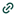

FIREFOX
USA
firefox.comPerché ci piace: È una fondazione no-profit. Lo usiamo da anni, e non per abitudine. Firefox esiste perché esiste Mozilla Foundation, una delle poche organizzazioni al mondo che si batte seriamente per un internet aperto, e che lo fa senza venderti niente. Ogni volta che scegli Firefox, stai finanziando quella missione.
Modello di business: Donazioni e partnership, principalmente Mozilla Foundation.
Occhio a: Il 2025 è stato un anno complicato per Mozilla. Un nuovo CEO ha annunciato di voler trasformare Firefox in un "browser AI", e la community ha protestato rumorosamente. La risposta di Mozilla? Hanno promesso un kill switch per disattivare tutto ciò che è AI, e si sono impegnati a rendere ogni funzione opt-in. Comunque lo raccomandiamo perché ci fidiamo della direzione, anche quando inciampa.
SOCIAL
Alternativa a: X (che è Twitter. Inutile continuare a chiamarlo X)
Perché cambiare: X è di Elon Musk.
Aggiornato: marzo 2026
MASTODON
GERMANIAPerché ci piace: Mastodon non è un'azienda. È una rete di server indipendenti, ognuno gestito da persone reali, con regole proprie, che parlano tutti la stessa lingua. Nessun algoritmo che decide cosa vedi. Nessuna pubblicità.
Modello di business: Donazioni. Nessuna pubblicità.
Occhio a: Scegliere un server all'inizio è disorientante. Ma nel 2025 l'onboarding è migliorato molto, e chi arriva da Twitter di solito si trova a casa entro una settimana. L'attrito iniziale vale la pena.